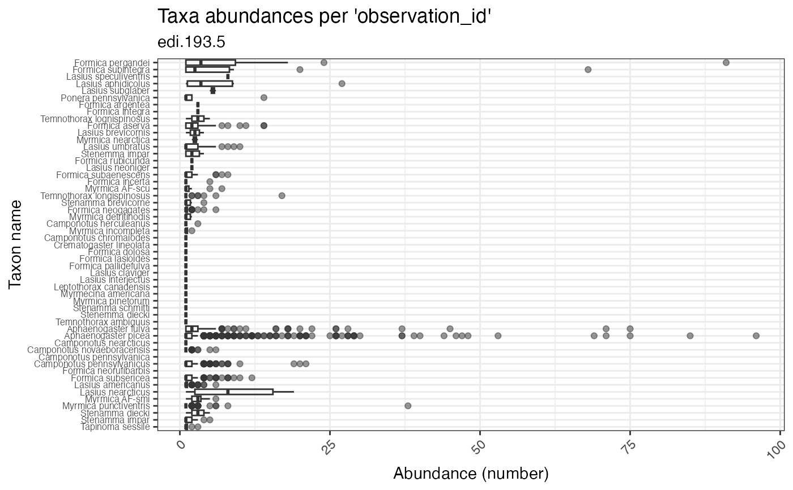

Plot taxon abundances averaged across observation records for each taxon. Abundances are reported using the units provided in the dataset. In some cases, these counts are not standardized to sampling effort.
plot_taxa_abund(
data,
id = NA_character_,
min_relative_abundance = 0,
trans = "identity",
facet_var = NA_character_,
color_var = NA_character_,
facet_scales = "free",
alpha = 1
)(list or tbl_df, tbl, data.frame) The dataset object returned by read_data(), a named list of tables containing the observation and taxon tables, or a flat table containing columns of the observation and taxon tables.
(character) Identifier of dataset to be used in plot subtitles. Is automatically assigned when data is a dataset object containing the id field, or is a table containing the package_id column.
(numeric) Minimum relative abundance allowed for taxa included in the plot; a value between 0 and 1, inclusive.
(character) Define the transform applied to the response variable; "identity" is default, "log1p" is x+1 transform. Built-in transformations include "asn", "atanh", "boxcox", "date", "exp", "hms", "identity", "log", "log10", "log1p", "log2", "logit", "modulus", "probability", "probit", "pseudo_log", "reciprocal", "reverse", "sqrt" and "time".
(character) Name of column to use for faceting. Must be a column of the observation or taxon table.
(character) Name of column to use for plot colors.
(character) Should scales be free ("free", default value), fixed ("fixed"), or free in one dimension ("free_x", "free_y")?
(numeric) Alpha-transparency scale of data points. Useful when many data points overlap. Allowed values are between 0 and 1, where 1 is 100% opaque. Default is 1.
(gg, ggplot) A gg, ggplot object if assigned to a variable, otherwise a plot to your active graphics device
The data parameter accepts a range of input types but ultimately requires the 13 columns of the combined observation and taxon tables.
if (FALSE) { # \dontrun{
# Read a dataset of interest
dataset <- read_data("edi.193.5")
# plot ecocomDP formatted dataset
plot_taxa_abund(dataset)
# plot flattened ecocomDP dataset, log(x+1) transform abundances
plot_taxa_abund(
data = flatten_data(dataset),
trans = "log1p")
# facet by location color by taxon_rank, log 10 transform
plot_taxa_abund(
data = dataset,
facet_var = "location_id",
color_var = "taxon_rank",
trans = "log10")
# facet by location, minimum rel. abund = 0.05, log 10 transform
plot_taxa_abund(
data = dataset,
facet_var = "location_id",
min_relative_abundance = 0.05,
trans = "log1p")
# color by location, log 10 transform
plot_taxa_abund(
data = dataset,
color_var = "location_id",
trans = "log10")
# tidy syntax, flatten then filter data by date
dataset %>%
flatten_data() %>%
dplyr::filter(
lubridate::as_date(datetime) > "2003-07-01") %>%
plot_taxa_abund(
trans = "log1p",
min_relative_abundance = 0.01)
} # }
# Plot the example dataset
plot_taxa_abund(ants_L1)
#> Warning: Removed 78 rows containing non-finite outside the scale range
#> (`stat_boxplot()`).
